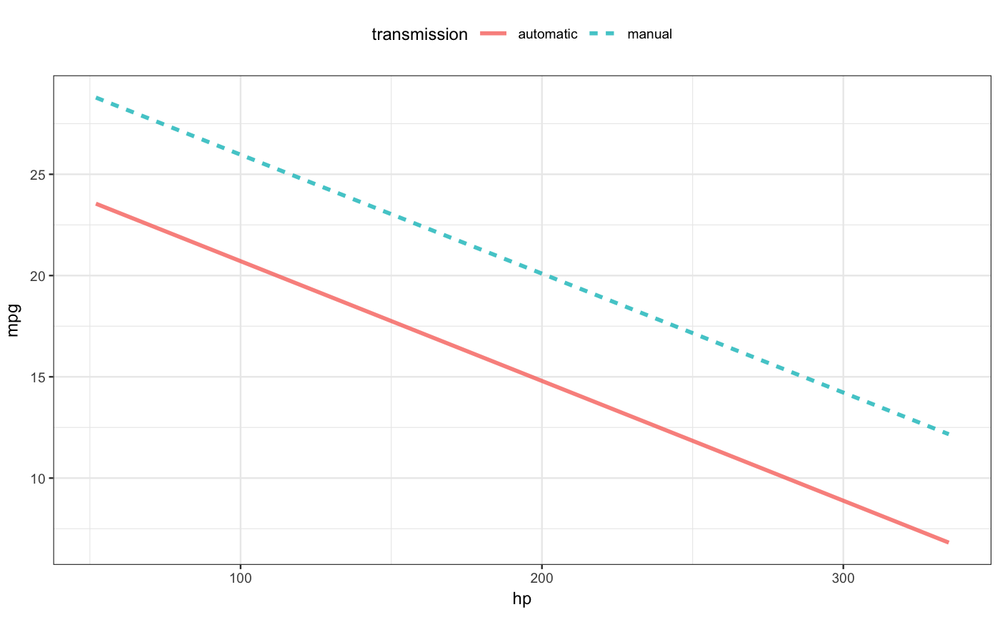

The mosaicModel package provides a basic interface for interpreting and displaying models. From the early beginnings of R, methods such as summary(), plot(), and predict() provided a consistent vocabulary for generating model output and reports, but the format and contents of those reports depended strongly on the specifics of the model architecture. For example, for architectures such as lm() and glm(), the summary() method produces a regression table showing point estimates and standard errors on model coefficients. But other widely used architectures such as random forests or k-nearest neighbors do not generate coefficients and so need to be displayed and interpreted in other ways.
To provide a general interface for displaying and interpreting models, the mosaicModel package provides an alternative set of functions that make sense for a wide range of model types, including those typically grouped under the term “machine learning,” but work more consistently across this wide range of model types.
mod_eval() – evaluate a model, that is, turn inputs into model values and standard errors on those values.mod_plot() – produce a graphical display of the “shape” of a model. There can be as many as 4 input variables shown, along with the output.mod_effect() – calculate effect sizes, that is, how a change in an input variable changes the outputmod_error() – find the mean square prediction error (or the log likelihood)mod_ensemble() – create an ensemble of bootstrap replications of the model, that is, models fit to resampled data from the original model.mod_cv() – carry out cross validation on one or more models.mod_fun() – extract a function from a model that implements the inputs-to-output relationship.mosaicModel stays out of the business of fitting and training models. You do that using functions provied elsewhere, for example using
lm() or glm() provided by the stats package for fitting linear or generalized linear models;train() from the caret package for machine learning;rpart(), randomForest(), rlm(), and other functions provided by other packages.The package authors will try to expand the repertoire as demand requires. (See the section on adding support for additional model types.)
This vignette is intended to be a concise introduction to the use of mosaicModel rather than a systematic introduction to modeling. To that end, we’ll use short, “simple,” and readily available data sets, mtcars and iris, which come already installed in R, and assume the reader already has a basic understanding of the models used in the examples.
mtcars records fuel consumption (mpg) of 1973-74 model cars along with a variety of other attributes such as horsepower (hp), weight (wt), and transmission type (am). We’ll use mtcars for a regression problem: How do the different aspects of a car relate to its fuel consumption?
iris records sepal width and length and petal width and length for 50 flowers of each of three species of iris. We’ll use iris for a classification problem: Given sepal and petal characteristics for a flower, which species is the flower likely to be?
We are not going to concern ourselves here with building good models, just demonstrating how models can be built and evaluated: the techniques you would need for building and refining models to serve your own purposes.
For both the fuel-consumption and iris-species problems, we’ll build two models. Refining and improving models is generally a matter of comparing models.
To indicate some of the relationships in the mtcars data, here’s a simple visualization along with the command to make it using the ggformula package. (Note: in the first line of the command, we’re adding a categorical variable, transmission, to the existing quantitative variables in mtcars so that the examples can show both quantitative and categorical variables.)
mtcars <- mtcars %>% mutate(transmission = ifelse(am, "manual", "automatic"))
gf_point(mpg ~ hp, color = ~ transmission, data = mtcars)
A simple display of the mtcars data used in the example.
Now we fit two models using these data.
fuel_mod_1 <- lm(mpg ~ hp * transmission, data = mtcars)
fuel_mod_2 <- lm(mpg ~ ns(hp, 2) * transmission, data = mtcars)The second model includes a nonlinear dependence on horsepower. You can think of ns() as standing for “not straight” with the integer describing the amount of “curviness” allowed.
For models involving only a very few explanatory variables, a plot of the model can give immediate insight. The mod_plot() function reduces the work to make such a plot.

Two important additional arguments to mod_plot() are
a formula specifying the role of each explanatory variable. For instance, the formula ~ transmission + hp would put the categorical transmission variable on the x-axis and use hp for color. Additional variables, if any, get used for faceting the graphic.
An interval= argument, which, for many regression model types, can be set to "prediction" or "confidence".
The iris dataset has four explanatory variables. Here’s species shown as a function of two of the variables:
For later comparison to the models that we’ll train, note that when the petal length and sepal length are both large, the flowers are almost always virginica.
Again, to illustrate how the mosaicModel package works, we’ll build two classifiers for the iris species data: a random forest using two of the available explanatory variables and a k-nearest neighbors classifier. (The period in the formula Species ~ . indicates that all variables should be used except the outcome variable.)
library(randomForest)
iris_mod_1 <- randomForest(Species ~ Sepal.Length + Petal.Length, data = iris)
library(caret)
iris_mod_2 <- knn3(Species ~., data = iris, k = 15)Notice that these models are trained using functions that come from two different packages: randomForest() comes from randomForest and knn3() from caret. mosaicModel does not provide alternatives or replacements for these functions but lets you use model-training functions from whatever packages you like.
Again, we can visualize the form of the function:
Since this is a classifier, the plot of the model function shows the probability of one of the output classes. That’s virginica here. When the petal length is small, say around 1, the flower is very unlikely to be virginica. But for large petal lengths, and especially for large petal lengths and large sepal lengths, the flower is almost certain to be virginica.
If your interest is in a class other than virginica, you can specify the class you want with an additional argument, e.g. class_level = "setosa".
The second iris model has four explanatory variables. This is as many as mod_plot() will display:
The plot shows that the flower species does not depend on either of the two variables displayed on the x-axis and with color: the sepal width and the sepal length. This is why the line is flat and the colors overlap. But you can easily see a dependence on petal width and, to a very limited extent, on petal length.
The choice of which role in the plot is played by which explanatory variable is up to you. Here the dependence on petal length and width are emphasized by using them for x-position and color:
The mod_plot() function creates a graphical display of the output of the model for a range of model inputs. The mod_eval() function (which mod_plot() uses internally), produces the output in tabular form, e.g.
## hp transmission model_output
## 1 200 manual 20.09568mod_eval() tries to do something sensible if you don’t specify a value (or a range of values) for an explanatory variable.
## hp transmission model_output
## 1 0 automatic 26.624848
## 2 400 automatic 2.970055
## 3 0 manual 31.842501
## 4 400 manual 8.348865Another interface to evaluate the model is available in the form of a “model function.” This interface may be preferred in uses where the objective of modeling is to develop a function that can be applied in, say, calculus operations.
## hp transmission model_output
## 1 200 manual 20.09568
## 2 201 manual 20.03695
## 3 202 manual 19.97821
## 4 203 manual 19.91948You can also evaluate classifiers using mod_eval() or mod_fun().
## Sepal.Length Petal.Length setosa versicolor virginica
## 1 4 0 1.000 0.000 0.000
## 2 8 0 0.614 0.268 0.118
## 3 4 10 0.200 0.180 0.620
## 4 8 10 0.000 0.000 1.000## Sepal.Length Petal.Length setosa versicolor virginica
## 1 4 5 0.202 0.184 0.614
## 2 5 5 0.032 0.436 0.532It’s often helpful in interpreting a model to know how the output changes with a change in one of the inputs. Traditionally, model coefficients have been used for this purpose. But some models (random forests, for example) do not have model coefficients and even in those that do, the use of interactions and nonlinear terms spreads out the information across multiple coefficients.
As an alternative, mod_effect() calculates a model input at one set of values, repeats the calculation after modifying a selected input, and combines the result into a “rate-of-change/slope” or a finite-difference.
Here, mod_effect() is calculating the (average) rate of change of fuel consumption (remember, the output of fuel_mod_1 is in terms of mpg) with respect to hp:
## slope hp to_hp transmission
## 1 -0.06520024 120 170 automaticSince no specific inputs were specified, mod_effect() attempted to do something sensible.
You can, of course, specify the inputs you want, for instance:
## slope hp to_hp transmission
## 1 -0.10306173 100 150 manual
## 2 -0.02649382 200 250 manual## slope hp to_hp transmission
## 1 -0.075673339 100 150 automatic
## 2 -0.032461720 200 250 automatic
## 3 -0.016061279 300 350 automatic
## 4 -0.103061728 100 150 manual
## 5 -0.026493816 200 250 manual
## 6 0.002566599 300 350 manualBy default, the step size for a quantitative variable is approximately the standard deviation. You can set the step to whatever value you want with the step = argument.
## slope hp to_hp transmission
## 1 -0.07865235 120 120.1 automaticAdvice: Whatever you may have learned in calculus about limits, a finite step size is generally what you want, particularly for jagged kinds of model functions like random forests or knn. For instance, compare the effect size of Sepal.Length in iris_mod_2 using a “small” step size and a step size on the order of the standard deviation of Sepal.Length.
bind_rows(
mod_effect(iris_mod_2, ~ Sepal.Length, step = 0.01, class_level = "virginica" ),
mod_effect(iris_mod_2, ~ Sepal.Length, step = 1, class_level = "virginica")
)## slope_virginica Sepal.Length to_Sepal.Length Sepal.Width Petal.Length
## 1 0 5.8 5.81 3 4.4
## 2 0 5.8 6.80 3 4.4
## Petal.Width
## 1 1.3
## 2 1.3The zero effect size for the small step is an artifact. The k-nearest neighbors model is piecewise constant.
Sometimes you want to know how the model performs. The mod_error() function will compute the mean square error for a regression model and the log likelihood for a classification model.
## Warning in mod_error(fuel_mod_2): Calculating error from training data.## mse
## 5.915142Use the testdata = argument to do the calculations on specified testing data, as in cross validation.
## mse
## 4.621065You have your choice of several measures of error. (See the documentation for mod_error().) For instance, the following two commands calculate for the second iris model the classification error rate (about 3%) and the log-likelihood. (Of course, these two measures of error are on entirely different scales, so there’s no point in comparing them to each other. Generally, you compare the same error measure across two or more models.)
## Warning in mod_error(iris_mod_2, error_type = "class_error"): Calculating
## error from training data.## class_error
## 0.01333333## Warning in mod_error(iris_mod_2, error_type = "LL"): Calculating error from
## training data.## LL
## -13.06527Bootstrapping provides a broadly applicable way to characterize the sampling uncertainty in parameter estimates, model predictions, or effect sizes. To use bootstrapping, use mod_ensemble() to create an ensemble of models all with the same architecture and parameters as the original each trained on a different bootstrap sample.
ensemble_fuel_1 <- mod_ensemble(fuel_mod_1, nreps = 10)
ensemble_iris_1 <- mod_ensemble(iris_mod_1, nreps = 10)Now you can use other functions from the package, but putting the ensemble in the argument slot for the model, for instance:
## slope_setosa Petal.Length to_Petal.Length Sepal.Length .trial
## 1 -0.004 4.4 5.4 5.8 1
## 2 -0.014 4.4 5.4 5.8 2
## 3 -0.012 4.4 5.4 5.8 3
## 4 -0.004 4.4 5.4 5.8 4
## 5 -0.002 4.4 5.4 5.8 5
## 6 -0.016 4.4 5.4 5.8 6
## 7 0.000 4.4 5.4 5.8 7
## 8 0.000 4.4 5.4 5.8 8
## 9 -0.014 4.4 5.4 5.8 9
## 10 -0.002 4.4 5.4 5.8 10## Sepal.Length Petal.Length setosa versicolor virginica .trial
## 1 5.8 4.4 0.004 0.992 0.004 1
## 2 5.8 4.4 0.016 0.962 0.022 2
## 3 5.8 4.4 0.012 0.966 0.022 3
## 4 5.8 4.4 0.004 0.972 0.024 4
## 5 5.8 4.4 0.002 0.998 0.000 5
## 6 5.8 4.4 0.016 0.960 0.024 6
## 7 5.8 4.4 0.000 0.998 0.002 7
## 8 5.8 4.4 0.000 0.996 0.004 8
## 9 5.8 4.4 0.018 0.956 0.026 9
## 10 5.8 4.4 0.002 0.996 0.002 10For effect sizes, the interest is often in knowing the standard error (just as it is for the coefficients of linear regression models). A shortcut for this is to to specify a number of bootstrap replications as an argument to mod_effect() or mod_eval() or mod_plot().
## # A tibble: 3 x 5
## change_mean change_se transmission to_transmission hp
## <dbl> <dbl> <chr> <chr> <dbl>
## 1 8.22 2.41 automatic manual 50
## 2 1.63 2.78 automatic manual 150
## 3 3.26 3.66 automatic manual 250## hp transmission model_output model_output_se
## 1 50 automatic 25.56826 1.2754697
## 2 150 automatic 17.02476 0.7146195
## 3 50 manual 32.27537 2.6157563
## 4 150 manual 21.60856 16.4086216Cross validation refers to a process of dividing the available data into two parts:
This division between training and testing produces an unbiased estimate of error (as opposed to the traditional methods such as \(R^2\) that need to be adjusted for degrees of freedom, etc.).
The mod_cv() function automates this process, using a method called k-fold cross validation. A common use is to compare the performance of models.
## mse model
## 1 11.277790 fuel_mod_1
## 2 10.066945 fuel_mod_1
## 3 11.008794 fuel_mod_1
## 4 10.615281 fuel_mod_1
## 5 10.498665 fuel_mod_1
## 6 9.771538 fuel_mod_1
## 7 10.782735 fuel_mod_1
## 8 10.531957 fuel_mod_1
## 9 11.907191 fuel_mod_1
## 10 10.065355 fuel_mod_1
## 11 8.230142 fuel_mod_2
## 12 7.906155 fuel_mod_2
## 13 8.019365 fuel_mod_2
## 14 7.844157 fuel_mod_2
## 15 7.698436 fuel_mod_2
## 16 7.814869 fuel_mod_2
## 17 8.035078 fuel_mod_2
## 18 10.359893 fuel_mod_2
## 19 8.052508 fuel_mod_2
## 20 8.126149 fuel_mod_2The result suggests a lower bias but higher variance for the second fuel model compared to the first.
Support is currently provide for a variety of model types including linear models, generalized linear models, random forests, and recursive partitioning as trained or fit by lm(), glm(), rlm() in the stats package or various functions in other packages such as randomForest or caret.
You can find out which model architectures are available with the command
## [1] mod_eval_fun.default* mod_eval_fun.glm*
## [3] mod_eval_fun.knn3* mod_eval_fun.lda*
## [5] mod_eval_fun.lm* mod_eval_fun.nls*
## [7] mod_eval_fun.qda* mod_eval_fun.randomForest*
## [9] mod_eval_fun.rpart* mod_eval_fun.train*
## see '?methods' for accessing help and source codeThe train method above refers to models built with the caret package’s function train(). One of the major points of caret is to allow the user to optimize the parameters for the training. If you do this when constructing a model, be aware that the training and optimizing will occur every time a bootstrap replication or cross-validation run is made. This can dramatically expand the time required for these operations. One way to find out how much the required time is expanded is to make a small bootstrap ensemble with mod_ensemble(). To avoid the retraining with caret models, you can pull the finalModel component out of the object created by train(). But while the train object will often work, the finalModel may be of a type not recognized by this package. See the section on new model architectures.
The package authors would like to have this package ready-to-run with commonly used model architectures. If you have a suggestion, please forward it.
R programmers can add their own model architectures by adding S3 methods for these functions:
formula_from_mod()data_from_mod()mod_eval_fun() evaluates the model at specified values of the input variables. This is much like predict(), from which it is often built.
Depending on the model type of interest, the default methods of some or all of these may work without modification. You can test this my running each function on several models to see if the desired results are produced.
If you need to create custom methods for your model objects, you can inspect the code for the the methods provided in the mosaicModel for examples that should give you some idea how to write your own methods.
To illustrate, let’s add a set of methods for the classification models produced by MASS::lda() and MASS::qda().
Step 1 is to create a model (or better, several models)
For this model, three of the four required functions work with the default method. formula_from_mod() should return a formula with the response variable on the left and the predictors on the right.
## Species ~ Petal.Length + Petal.Widthdata_from_mod() must extract the original data (or training) used to fit the model.
## Sepal.Length Sepal.Width Petal.Length Petal.Width Species
## 1 5.1 3.5 1.4 0.2 setosa
## 2 4.9 3.0 1.4 0.2 setosa
## 3 4.7 3.2 1.3 0.2 setosaThe call_from_mod() function returns a “call,” which is unfamiliar to many R users. It should look like the original call that constructed the model, as it does here.
## lda(formula = Species ~ Petal.Length + Petal.Width, data = placeholder)Many models store the information needed for these functions internally so that it is relatively easy to extract, often the default method works. For models that do not, we suggest writing a wrapper function that calls the original function and then adds some additional information to the model to make these functions easily computed.
Finally we need to create mod_eval_fun() method. The default methods do not work here, so we have some work to do.
This is not atypical because the various model constructing functions store the information required for this in many different ways. Let’s take a look at how mod_eval_fun() works for models of class knn3.
To start, let’s see if there is a predict() method defined.
## [1] coef mod_eval_fun model.frame pairs plot
## [6] predict print
## see '?methods' for accessing help and source codeThere is. This is a pretty common practice among those writing model-training functions. Regretably, there is considerable variety in the programming interface to predict() methods, so it’s quite common to have to implement a wrapper function around any existing predict() method so that it can be used with mosaicModel.
We can use args() to see what the argument names are for this method and refer to the help page for predict.lda() to see how they are used.
## function (object, newdata, prior = object$prior, dimen, method = c("plug-in",
## "predictive", "debiased"), ...)
## NULLnewdata = is often the name of the argument for specifying the model inputs, but sometimes it’s x or data or whatever.
Since lda/qda is a classifier, the form of output we would like to produce is a table of probabilities for each class level for each input class. This is the standard expected by mosaicModel. Let’s look at the output of predict():
## List of 3
## $ class : Factor w/ 3 levels "setosa","versicolor",..: 1 1 1 1 1 1 1 1 1 1 ...
## $ posterior: num [1:150, 1:3] 1 1 1 1 1 ...
## ..- attr(*, "dimnames")=List of 2
## .. ..$ : chr [1:150] "1" "2" "3" "4" ...
## .. ..$ : chr [1:3] "setosa" "versicolor" "virginica"
## $ x : num [1:150, 1:2] -6.04 -6.04 -6.2 -5.89 -6.04 ...
## ..- attr(*, "dimnames")=List of 2
## .. ..$ : chr [1:150] "1" "2" "3" "4" ...
## .. ..$ : chr [1:2] "LD1" "LD2"This is something of a detective story, but a person very familiar with lda() and with R will see that the predict method produces a list of two items. The second one called posterior and is a matrix with 150 rows and 3 columns, corresponding to the size of the training data.
Once located, do what you need in order to coerce the output to a data frame and remove row names (for consistency of output). Here’s the mod_eval_fun.lda() function from mosaicModel.
## function(model, data = NULL, interval = "none", ...) {
## if (is.null(data)) data <- data_from_mod(model)
##
## res <- as.data.frame(predict(model, newdata = data)$posterior)
##
## tibble::remove_rownames(res)
## }
## <bytecode: 0x7f80ecec1948>
## <environment: namespace:mosaicModel>The arguments to the function are the same as for all the mod_eval_fun() methods. The body of the function pulls out the posterior component, coerces it to a data frame and removes the row names. It isn’t always this easy. But once the function is available in your session, you can test it out. (Make sure to give it a data set as inputs to the model)
## setosa versicolor virginica
## 1 1.000000e+00 9.606455e-11 1.178580e-24
## 2 2.588683e-05 9.999735e-01 6.615331e-07
## 3 3.932322e-16 8.612009e-01 1.387991e-01Now the high-level functions in mosaicModel can work on LDA models.
## # A tibble: 1 x 5
## slope_virginica… slope_virginica… Petal.Length to_Petal.Length
## <dbl> <dbl> <dbl> <dbl>
## 1 0.113 0.151 4.4 5.4
## # ... with 1 more variable: Petal.Width <dbl>